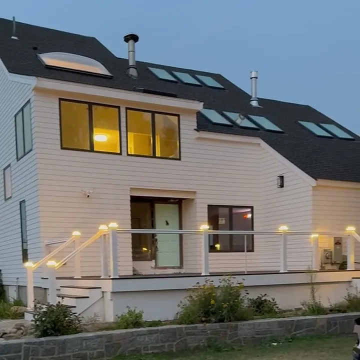
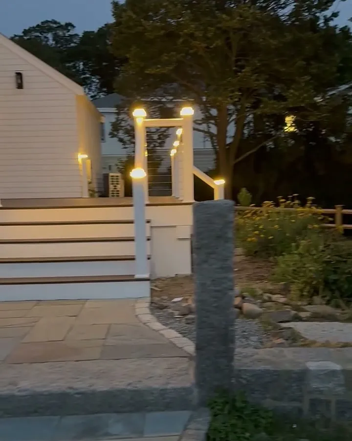
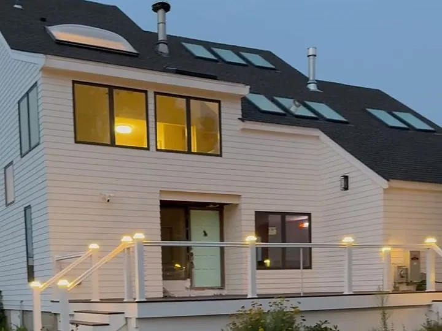
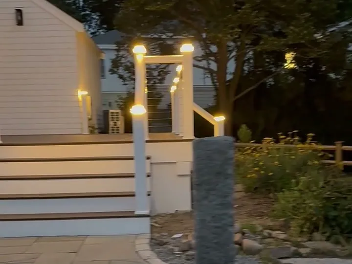
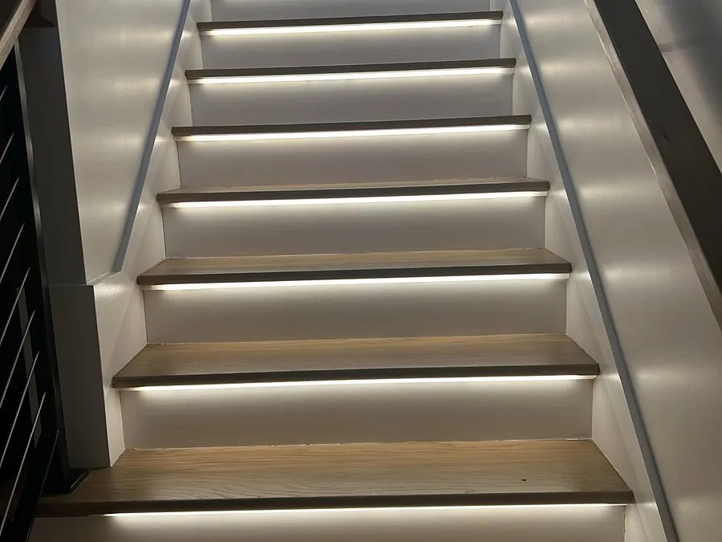

North Shore, MA
New England nights start early in the fall. We install landscape and outdoor lighting that makes your home safer to come home to, easy to find and great looking after dark, from path and patio lights to uplighting and security floodlights.

What's Included
Many outdoor lighting projects on the North Shore are sold by landscaping companies that hand off the electrical side. With us, the person who designs the lighting is a licensed electrician: we plan the circuit, the GFCI protection, the transformer and the timer, pull the permit when it's needed, and stand behind the whole system.

Real Jobs, Real Photos



Path and step lights. Good outdoor lighting starts with the routes you walk every day: the driveway, the front steps, the walkway to the door and the stairs to the deck. We light them so you can see every step in the winter dark, in rain or in snow.
Uplighting and accent lighting. Lights aimed up into a tree, across a stone wall or along the front of the house give your property depth and curb appeal. We place each fixture to highlight what makes your home stand out and aim it to keep glare out of your neighbors' windows.
Patio, deck and porch lighting. Step lights, rail lights and soft overhead lighting turn the deck or patio into a space you actually use after sunset.
Security lighting. Motion sensor floodlights over the driveway, the garage and the side yard add security without leaving lights burning all night.
Driveway, entry and garage lighting. The light by your front door and over the garage is the first thing guests and delivery drivers look for. We replace tired fixtures with brighter, efficient LED lights, add a second light where one side of the driveway stays dark and put them on a photocell so they're always on when you pull in.
Lighting the house itself. Soft light washed across the front of the house, the columns of a porch or the texture of a stone chimney makes a classic New England home look its best at night. We keep it subtle: the goal is a warm, welcoming glow, not a stadium.
Most landscape lighting runs on a low voltage system. A transformer, plugged into or wired to a weatherproof outdoor circuit, steps the power down to a safe low voltage that runs through buried cable to each fixture. It's safe around gardens and easy to adjust or expand as your plants grow.
The details make the difference: the transformer has to be sized for the total load, the cable has to be the right gauge for the distance so the last light isn't dimmer than the first, and every connection has to be sealed against water. That's electrical work, and it's where many outdoor systems fail.
Security floodlights, post lights and outdoor outlets usually run on a standard line voltage circuit instead. We tell you which one fits each spot, and we add photocells, timers or smart controls so the lights come on at dusk and turn off on their own.
The price depends on how many fixtures you want, the type and quality of the fixtures, the size of the transformer, how far the cable has to run, whether a new outdoor circuit or GFCI outlet is needed and the kind of controls you choose.
Instead of a generic number, we walk the property with you, ideally late in the afternoon, mark where each light goes and give you a free written estimate before any work begins. You can also start small, with the front walk and the entry, and add more lights later on the same system.
We'll also be straight with you about where to spend and where to save. A good transformer and solid fixtures in the spots that matter most will outlast a big kit of cheap lights, and a system planned with room to grow means adding lights next year is quick and simple.
Outdoor lighting on the North Shore has to handle salt air near the coast, freezing winters, heavy snow and spring thaws. We use weather rated fixtures, in-use covers on outdoor outlets and GFCI protection where it's required, and we bury and protect the cable so it doesn't get cut by the next round of yard work.
We also think about winter: fixtures placed where the plow and the snow blower won't hit them, and timers that keep the driveway and steps lit during the longest nights of the year. When an outdoor circuit gives you trouble, our electrical repair service can track down the cause.
Outdoor lighting should take care of itself. A photocell turns the lights on at dusk and off at dawn, so they follow the seasons without anyone touching a switch. An astronomical timer does the same and can also shut the garden lights off at a set time, while the path and entry lights stay on all night.
If you like to control things from your phone, smart transformers and smart switches let you set scenes, change schedules and turn on the backyard lights from the couch. We set it all up, show you how it works and leave the system simple enough that anyone in the family can use it.
How It Works
We look at your setup and tell you what you actually need, in plain English. Always free.
A fixed price in writing before any work, with the permit plan included. No surprises.
On-time, to-code work, inspected and cleaned up before we leave.
Good to Know
It depends on the number and quality of the fixtures, the transformer, the cable runs and whether a new outdoor circuit is needed. We walk the property with you and give you a free written estimate before any work begins.
Plug-in low voltage kits are sold for do it yourself projects, but anything that involves a new outdoor outlet, a new circuit or line voltage fixtures should be done by a licensed electrician. A professional install also avoids the most common problems: undersized transformers, dim lights at the end of the run and failing connections.
The most common are corroded or loose connections, cable cut by yard work, transformers that are too small for the number of lights, lights that get dimmer along a long cable run and water getting into cheap fixtures. Proper sizing, sealed connections and buried cable prevent most of them.
Look for solid brass or copper fixtures, sealed integrated LED or quality LED lamps, and a properly sized transformer with a timer or photocell. They cost more up front than plastic kits but hold up to New England weather for many years.
A low voltage transformer needs a weatherproof, GFCI protected outdoor outlet or circuit. If you don't have one in the right place, we install it as part of the job.
Low voltage systems use a transformer and are ideal for path, garden and accent lights. Line voltage runs at standard household voltage and is used for floodlights, post lights and outlets. Most homes use a mix of both.
Where We Work
We install landscape and outdoor lighting across the North Shore, including larger properties in Topsfield, Boxford and Lynnfield and coastal homes in Marblehead and Swampscott. Planning an outdoor EV charger or need more capacity first? See our panel upgrades. For indoor light, see recessed lighting installation.
More From Julio
Get a free, no-pressure estimate today. Licensed, insured and always on time.